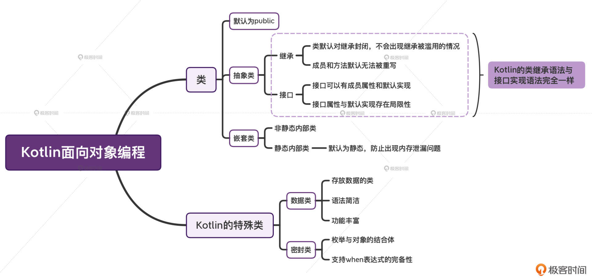

Audio面向对象：理解Kotlin设计者的良苦用心
你好，我是朱涛。这节课，我们来学习 Kotlin 的面向对象编程：类、接口、继承、嵌套，以及 Kotlin 独有的数据类和密封类。
面向对象（Object Oriented）是软件开发方法，也是计算机界应用最广的一种编程范式。它是把程序的“数据”和“方法”作为一个整体来看待，将其抽象成了一个具体的模型，从而更贴近事物的自然运行模式。它的特点是简单易懂，符合人类的思维模式。
在“面向对象”的概念上，虽然 Kotlin 和 Java 之间有一定的语法差异，但底层的思想是没有变的。比如 Java 和 Kotlin 当中，都有类、接口、继承、嵌套、枚举的概念，唯一区别就在于这些概念在两种语言中的具体语法不同。我们需要做的，仅仅只是为我们脑海里已经熟知的概念，再增加一种语法规则而已。
而如果你没有 Java 基础也没关系，今天这节课要学习的内容，几乎是所有编程语言都需要掌握的概念。在掌握了 Kotlin 面向对象的编程思想后，如果你再去学习其他编程语言，你也照样可以快速迁移这些知识点。
当然，Kotlin 作为一门新的语言，它也创造了一些新的东西，比如数据类、密封类、密封接口等。这些 Kotlin 的新概念，会是我们需要着重学习的对象。实际上，也正是因为 Kotlin 的这些独有概念，使得它形成了一种独特的编程风格和编程思想。
那么，在学习这节课的时候，我想请你注意一点，就是如果你已经有了 Java、C 的编程经验，一定要有意识地跳出从前的编程习惯，尝试去理解 Kotlin 的编程思想。只有这样，你才能写出地道的 Kotlin 代码，而不仅仅只是用 Kotlin 语法翻译 Java/C 代码。
怎么写出有 Kotlin 特点的类？
Kotlin 当中的“类”，我们可以将其理解为对某种事物的“抽象模型”。比如说，我们可以在 Kotlin 当中定义一个类，它叫做 Person。
class Person(val name: String, var age: Int)计算机的世界里当然没有“人”的概念，但是这并不妨碍我们在代码当中定义一个人的“抽象模型”。上面的 Person 类当中，有一个属性，叫做“name”，每个人都会有名字，而名字也是属于人的一部分。这也很好理解，对吧。
不过，如果你以 Java 的角度来分析上面的代码的话，会发现它并没有表面上那么简单。如果我们将其翻译成等价的 Java 代码，它会变成很多行代码：
public class Person {
private String name;
private int age;
public Person(String name, int age) {
this.name = name;
this.age = age;
}
// 属性 name 没有 setter
public String getName() {
return name;
}
public int getAge() {
return age;
}
public void setAge(int age) {
this.age = age;
}
}那么，把 Kotlin 和 Java 的代码对比着来看，我们很快就会发现，Kotlin 当中，Person 类的 name 是用 val 修饰的，这意味着，它在初始化以后将无法被修改。这个逻辑对应到 Java 当中，就是该变量只有 getter 没有 setter。而 Kotlin 当中，Person 类的 age 是 var 修饰的，意味着它是可以被随意修改的。这个逻辑对应到 Java 当中，就是该变量既有 getter 也有 setter。
这下你应该就明白了，Kotlin 定义的类，在默认情况下是 public 的，编译器会帮我们生成“构造函数”，对于类当中的属性，Kotlin 编译器也会根据实际情况，自动生成 getter 和 setter。
到这里，我们不得不感叹 Kotlin 语言的简洁性。Kotlin 里简单到不能再简单的一行代码，在 Java 中却要写这么一大串。要注意，这里的差距并不仅仅是我们程序员敲代码的时间，还包括后续我们迭代维护的时间，或者说是读代码的时间。Kotlin 一行代码，我们轻松就能理解了，而对应的 Java 则完全不一样。并且，这还只是一个最简单的案例，真实的程序比这复杂千万倍。
自定义属性 getter
我们继续来看前面的 Person 类的例子。如果这时候，我们希望它增加一个功能，就是根据年龄的大小自动判断是不是成年人，也就是 age≥18。
如果按照我们从前的 Java 思维，一定会习以为常地写出下面这样的代码，也就是为 Person 类增加一个新的方法：isAdult()。
class Person(val name: String, var age: Int) {
fun isAdult(): Boolean {
return age >= 18
}
}又或者，我们可以充分发挥 Kotlin 的简洁语法特性，将 isAdult() 写得更加清爽一些：
class Person(val name: String, var age: Int) {
fun isAdult() = age >= 18
}代码写成这样，已经算不错了。然而，我们还可以用另一种更符合直觉的写法，那就是将 isAdult() 定义成 Person 的属性。具体的做法，就是借助 Kotlin 属性的自定义 getter。
class Person(val name: String, var age: Int) {
val isAdult
get() = age >= 18
// ↑
// 这就是isAdult属性的getter方法
}所谓 getter，就是获取属性值的方法。我们通过自定义这个 get() 方法，就可以改变返回值的规则。比如，这里的年龄大于等于 18，就是成年人，这个规则就是通过自定义来实现的。
以上的 isAdult 属性，我们省略了它的类型，因为编译器会自动推导它的类型是 Boolean（布尔）类型。另外，由于 get() 方法内部只有一行代码，我们使用了函数的“单一表达式”写法，直接用等号连接即可。
而如果 get() 方法内部的逻辑比较复杂，我们仍然可以像正常函数那样，带上花括号：
class Person(val name: String, var age: Int) {
val isAdult: Boolean
get() {
// do something else
return age >= 18
}
}不过需要注意的是，在这种情况下，编译器的自动类型推导就会失效了，所以我们要为 isAdult 属性增加明确的类型：Boolean。
看到这里，也许你会觉得奇怪：判断一个人是否为成年人，我们只需要判断 age 这个属性即可，为什么还要引入一个新的属性 isAdult 呢？这不是凭空多占用了一个变量的内存吗？这么做是否有必要？
实际上，这里涉及到 Java 到 Kotlin 的一种思想转变。让我们来详细分解上面的问题：
首先，从语法的角度上来说，是否为成年人，本来就是属于人身上的一种属性。我们在代码当中将其定义为属性，更符合直觉。而如果我们要给 Person 增加一个行为，比如 walk，那么这种情况下定义一个新的方法就是非常合适的。
其次，从实现层面来看，我们确实定义了一个新的属性 isAdult，但是 Kotlin 编译器能够分析出，我们这个属性实际是根据 age 来做逻辑判断的。在这种情况下，Kotlin 编译器可以在 JVM 层面，将其优化为一个方法。
通过以上两点，我们就成功在语法层面有了一个 isAdult 属性；但是在实现层面，isAdult 仍然还是个方法。这也就意味着，isAdult 本身不会占用内存，它的性能和我们用 Java 写的方法是一样的。而这在 Java 当中是无法实现的。
所以，当你使用 Kotlin 来编写代码的时候，一定要注意其中引入的 Kotlin 属性的含义，并且理解它的底层实现逻辑。只有这样，你才能真正发挥 Kotlin 简洁语法的优势，而不必束缚在 Java 或者 C 的代码撰写思维里。
对了，也许你会突发奇想，想要将上面的代码进一步简化，比如写成这样：
class Person(val name: String, var age: Int) {
val isAdult = age >= 18
}但实际上，这种代码是无法正常工作的。由于它牵涉到 Kotlin 的原理，你可以在学完下一节“Kotlin 原理”之后，再回过头来看看这段代码为什么有问题。
自定义属性 setter
我们继续来看前面的 Person 案例，假设这时候我们又来了一个新的需求，希望在 age 被修改的时候，能够做一些日志统计工作。如果是 Java，那我们直接在 setAge() 方法当中加入一些逻辑就行了。
可是在 Kotlin 当中，我们要怎么办呢？答案也很容易想到，自定义 setter。
class Person(val name: String) {
var age: Int = 0
// 这就是age属性的setter
// ↓
set(value: Int) {
log(value)
field = value
}
// 省略
}所谓 setter，就是可以对属性赋值的方法。当我们想要改变属性的赋值逻辑时，我们就可以通过自定义来实现了。需要注意的是，以上代码当中的 value，就是 set 方法传入的参数。而 set() 方法当中的 field 则是代表了 age，这是 Kotlin 编译器为我们提供的字段。field = value，这一行代码就表示我们实现了对 age 的赋值操作。
有的时候，我们不希望属性的 set 方法在外部访问，那么我们可以给 set 方法加上可见性修饰符，比如这里，我们可以给 set 方法加上 private，限制它仅可以在类的内部访问：
class Person(val name: String) {
var age: Int = 0
private set(value: Int) {
log(value)
field = value
}
// 省略
}在了解了 Kotlin 中类的定义以后，我们再来看一种特殊的类：抽象类。
抽象类与继承
前面我们所创建的类，比如 Person，它是具体的、已经定型的类，我们可以直接用它来创建对象。而抽象类，则不是具体的类，它没有完全定型，我们也不能直接用它来创建对象。
在 Kotlin 当中，抽象类的定义和 Java 几乎一样，也就是在关键字“class”“fun”的前面加上 abstract 关键字即可。这里我们继续上面的例子，把 Person 定义成抽象类，然后为它添加一个抽象方法：
abstract class Person(val name: String) {
abstract fun walk()
// 省略
}这样一来，如果我们要创建 Person 类，就必须要使用匿名内部类的方式，或者使用 Person 的子类来创建变量。而这，就需要用到类的继承了。
从概念上讲，Kotlin 的继承和 Java 的并没有区别，它们只是在语法上有一点点不一样。Java 当中我们是使用 extends 表示继承，而 Kotlin 当中我们则使用冒号来表示继承。
// Java 的继承
// ↓
public class MainActivity extends Activity {
@Override
void onCreate(){ ... }
}
// Kotlin 的继承
// ↓
class MainActivity : AppCompatActivity() {
override fun onCreate() { ... }
}除了继承的语法不太一样，重写的表达方式也不太一样。Java 当中是使用 @Override 注解，而 Kotlin 当中直接将其定义为了 override 关键字。而除了抽象类以外，正常的类其实也是可以被继承的。不过，我们必须对这个类标记为 open。如果一个类不是抽象类，并且没有用 open 修饰的话，它是无法被继承的。
class Person() {
abstract fun walk()
}
// 报错
class Boy: Person() {
}根据以上代码我们可以看到，Person 不是抽象类，同时它也没有被 open 修饰。Boy 这个类尝试继承 Person，会导致编译器报错。所以，我们必须为 Person 这个类加上 open 关键字：
open class Person() {
abstract fun walk()
}
class Boy: Person() {
// 省略重写逻辑
}所以，Kotlin 的类，默认是不允许继承的，除非这个类明确被 open 关键字修饰了。另外，对于被 open 修饰的普通类，它内部的方法和属性，默认也是不允许重写的，除非它们也被 open 修饰了：
open class Person() {
val canWalk: Boolean = false
fun walk()
}
class Boy: Person() {
// 报错
override val canWalk: Boolean = true
// 报错
override fun walk() {
}
}可以看到，由于 Person 类当中的 canWalk 属性以及 walk() 方法，它们都没有使用 open 修饰，在这种情况下，即使 Person 可以被继承，但在继承之后的 Boy 类当中，我们是无法重写 canWalk 属性、walk() 方法的。
也就是说，在继承的行为上面，Kotlin 和 Java 完全相反。Java 当中，一个类如果没有被 final 明确修饰的话，它默认就是可以被继承的。而这同时也就导致了，在 Java 当中“继承”被过度使用。对于这一点，经典书籍《Effective Java》也有提到过。
所以，Java 的继承是默认开放的，Kotlin 的继承是默认封闭的。Kotlin 的这个设计非常好，这样就不会出现 Java 中“继承被滥用”的情况。
好，下面，我们再来看看另一种常见的面向对象的编程方式，那就是“实现”。
接口和实现
Kotlin 当中的接口（interface），和 Java 也是大同小异的，它们都是通过 interface 这个关键字来定义的。
interface Behavior {
fun walk()
}
class Person(val name: String): Behavior {
override fun walk() {
// walk
}
// ...
}可以看到在以上的代码中，我们定义了一个新的接口 Behavior，它里面有一个需要被实现的方法 walk，然后我们在 Person 类当中实现了这个接口。
而在这里，我们又会发现 Kotlin 和 Java 不同的小细节：Kotlin 的继承和接口实现语法是一样的。多么得贴心！
Kotlin 的接口，跟 Java 最大的差异就在于，接口的方法可以有默认实现，同时，它也可以有属性。比如，我们来看看下面这段代码：
interface Behavior {
// 接口内的可以有属性
val canWalk: Boolean
// 接口方法的默认实现
fun walk() {
if (canWalk) {
// do something
}
}
}
class Person(val name: String): Behavior {
// 重写接口的属性
override val canWalk: Boolean
get() = true
}可以看到，我们在 Behavior 接口当中增加了一个属性 canWalk，代表是否可以行走。与此同时，我们在接口方法当中，为 walk() 方法提供了默认实现，这个实现的逻辑也很简单，如果 canWalk 为 true，才执行 walk 内部的具体行为。
需要特别注意的是，由于 walk 已经有了默认的实现，所以我们在 Person 类当中就可以不必实现 walk 方法了。而 Kotlin 的这一设计，就让“接口”和“抽象类”之间的界限越来越模糊了。
换句话说，Kotlin 当中的接口，被设计得更加强大了，它拥有了部分抽象类才有的特性，同时还可以灵活使用接口组合的特性。
另外你还需要知道一点，就是虽然在 Java 1.8 版本当中，接口也引入了类似的特性，但由于 Kotlin 是完全兼容 Java 1.6 版本的。因此为了实现这个特性，Kotlin 编译器在背后做了一些转换。这也就意味着，它是有一定局限性的。而具体的局限体现在哪里呢？这个我先不多讲，你可以自己回去思考思考。
嵌套
Java 当中，最常见的嵌套类分为两种：非静态内部类、静态内部类。Kotlin 当中也有一样的概念。
class A {
class B {
}
}以上代码中，B 类，就是 A 类里面的嵌套类，这非常容易理解。不过我们需要注意的是，这种写法的嵌套类，我们无法在 B 类当中访问 A 类的属性和成员方法。
class A {
val name: String = ""
fun foo() { }
class B {
println(name) // 报错
foo() // 报错
}
}可以看到，当我们尝试在 B 类当中访问 A 类的成员时，编译器会报错。如果你有 Java 基础，应该马上就能反应过来：这种写法就对应了 Java 当中的静态内部类！
// 等价的Java代码如下：
public class A() {
public String name = "";
public void foo() { }
public static class B {
println(name) // 报错
foo() // 报错
}
}所以，Kotlin 当中的普通嵌套类，它的本质是静态的。相应地，如果想在 Kotlin 当中定义一个普通的内部类，我们需要在嵌套类的前面加上 inner 关键字。
class A {
val name: String = ""
fun foo() { }
// 增加了一个关键字
↓
inner class B {
println(name) // 通过
foo() // 通过
}
}inner 关键字，代表了 B 类是 A 类内部的类，这种情况下，我们在 B 类的内部是可以访问 A 类的成员属性和方法的。
Kotlin 的这种设计非常巧妙。如果你熟悉 Java 开发，你会知道，Java 当中的嵌套类，如果没有 static 关键字的话，它就是一个内部类，这样的内部类是会持有外部类的引用的。可是，这样的设计在 Java 当中会非常容易出现内存泄漏！而大部分 Java 开发者之所以会犯这样的错误，往往只是因为忘记加“static”关键字了。这是一个 Java 开发者默认情况下就容易犯的错。
Kotlin 则反其道而行之，在默认情况下，嵌套类变成了静态内部类，而这种情况下的嵌套类是不会持有外部类引用的。只有当我们真正需要访问外部类成员的时候，我们才会加上 inner 关键字。这样一来，默认情况下，开发者是不会犯错的，只有手动加上 inner 关键字之后，才可能会出现内存泄漏，而当我们加上 inner 之后，其实往往也就能够意识到内存泄漏的风险了。
也就是说，Kotlin 这样的设计，就将默认犯错的风险完全抹掉了！
Kotlin 中的特殊类
好了，到目前为止，我们接触到的都是 Kotlin 与 Java 都有的概念。接下来，我们来看两个 Java 当中没有的概念，数据类和密封类。
数据类
数据类（Data Class），顾名思义，就是用于存放数据的类。要定义一个数据类，我们只需要在普通的类前面加上一个关键字“data”即可。比如前面案例当中的 Person 类，我们只需要在它的前面加上 data，就可以将它变为一个“数据类”。
// 数据类当中，最少要有一个属性
↓
data class Person(val name: String, val age: Int)在 Kotlin 当中，编译器会为数据类自动生成一些有用的方法。它们分别是：
equals()；
hashCode()；
toString()；
componentN() 函数；
copy()。
所以，即使我们的 Person 类只有一行 Kotlin 代码，我们仍然可以在其他地方调用编译器，为我们自动生成这些方法。
val tom = Person("Tom", 18)
val jack = Person("Jack", 19)
println(tom.equals(jack)) // 输出：false
println(tom.hashCode()) // 输出：对应的hash code
println(tom.toString()) // 输出：Person(name=Tom, age=18)
val (name, age) = tom // name=Tom, age=18
println("name is $name, age is $age .")
val mike = tom.copy(name = "Mike")
println(mike) // 输出：Person(name=Mike, age=18)这里你需要注意的是最后的四行代码。
“val (name, age) = tom”这行代码，其实是使用了数据类的解构声明。这种方式，可以让我们快速通过数据类来创建一连串的变量。另外，就是 copy 方法。数据类为我们默认实现了 copy 方法，可以让我们非常方便地在创建一份拷贝的同时，修改某个属性。
密封类
Kotlin 当中的密封类，常常用来表示某种受到限制的继承结构。这样说起来可能有点抽象，让我们换个说法：密封类，是更强大的枚举类。
首先，让我们看看枚举类是什么。
enum class Human {
MAN, WOMAN
}
fun isMan(data: Human) = when(data) {
Human.MAN -> true
Human.WOMAN -> false
// 这里不需要else分支，编译器自动推导出逻辑已完备
}我们通过 enum 就可以定义枚举类，所谓枚举，就是一组有限的数量的值。比如，人分为男人和女人。这样的分类是有限的，所以我们可以枚举出每一种情况。我们在 when 表达式当中使用枚举时，编译器甚至可以自动帮我们推导出逻辑是否完备。这是枚举的优势。
但是，枚举也有它的局限性。
println(Human.MAN == Human.MAN)
println(Human.MAN === Human.MAN)
输出
true
true比如在这里我们可以看到，当我们尝试去判断枚举的“结构相等”和“引用相等”时，结果始终都是 true。而这就代表了，每一个枚举的值，它在内存当中始终都是同一个对象引用。
那么万一，我们想要枚举的值拥有不一样的对象引用，我们该怎么办呢？这时候就需要“密封类”出场了！
想要定义密封类，我们需要使用 sealed 关键字，它的中文含义也代表着“密封”。在 Android 开发当中，我们会经常使用密封类对数据进行封装。比如我们可以来看一个代码例子：
sealed class Result<out R> {
data class Success<out T>(val data: T, val message: String = "") : Result<T>()
data class Error(val exception: Exception) : Result<Nothing>()
data class Loading(val time: Long = System.currentTimeMillis()) : Result<Nothing>()
}这个例子是改造于我实际工作中用过的代码。首先，我们使用 sealed 关键字定义了一个 Result 类，并且它需要一个泛型参数 R，R 前面的 out 我们可以暂时先忽略。
这个密封类，我们是专门用于封装网络请求结果的。可以看到，在 Result 类当中，分别有三个数据类，分别是 Success、Error、Loading。我们将一个网络请求结果也分为了三大类，分别代表请求成功、请求失败、请求中。
这样，当网络请求有结果以后，我们的 UI 展示逻辑就会变得非常简单，也就是非常直白的三个逻辑分支：成功、失败、进行中。我们将其与 Kotlin 协程当中的 when 表达式相结合，就能很好地处理 UI 展示逻辑：如果是 Loading，我们就展示进度条；如果是 Success，我们就展示成功的数据；如果是 Error，我们就展示错误提示框。
fun display(data: Result) = when(data) {
is Result.Success -> displaySuccessUI(data)
is Result.Error -> showErrorMsg(data)
is Result.Loading -> showLoading()
}由于我们的密封类只有这三种情况，所以我们的 when 表达式不需要 else 分支。可以看到，这样的代码风格，既实现了类似枚举类的逻辑完备性，还完美实现了数据结构的封装。
而且，在最新的 Kotlin 1.5 版本当中，sealed 不仅仅可以用于修饰类，还可以用于修饰接口。这就为我们的密封类实现多个接口，提供了可能。
小结
在这节课当中，我们学习了面向对象常见的概念，包括类、继承、接口、实现、枚举，还有 Kotlin 独有的数据类、密封类。同时也进一步领略到了 Kotlin 语法在一些细节的良苦用心。比如说：
Kotlin 的类，默认是 public 的。
Kotlin 的类继承语法、接口实现语法，是完全一样的。
Kotlin 当中的类默认是对继承封闭的，类当中的成员和方法，默认也是无法被重写的。这样的设计就很好地避免了继承被滥用。
Kotlin 接口可以有成员属性，还可以有默认实现。
Kotlin 的嵌套类默认是静态的，这种设计可以防止我们无意中出现内存泄漏问题。
Kotlin 独特的数据类，在语法简洁的同时，还给我们提供了丰富的功能。
密封类，作为枚举和对象的结合体，帮助我们很好地设计数据模型，支持 when 表达式完备性。

看到这里，你一定会发现，我们上面提到的这些点，正好也是决定着 Kotlin 编程思想的关键。也正是 Kotlin 这样独特的设计，才形成了 Kotlin 迥然不同的编程风格。曾经有不少人问过我这样的问题：“如何才能拥有 Kotlin 编程思维，而不是用 Kotlin 写 Java 风格代码？如何才能写出优雅的 Kotlin 代码？”
答案其实很简单，我们先要掌握 Kotlin 的语法，然后透过这些语法细节去揣摩 Kotlin 设计者的意图，当我们理解 Kotlin 设计者为什么要设计某个语法时，我们就不可能用错这个语法了。而当我们能够用好 Kotlin 的每个语法的时候，我们自然而然地就可以写出优雅的 Kotlin 代码了。
比如，当我们知道数据类是为了解决冗余的 Java Bean 而设计的，那我们无论如何都不会在 Kotlin 当中再写一遍 Kotlin Bean 了。又或者，当我们知道 when 表达式可以自动判断逻辑分支是否完备的时候，我们自然就会想办法让 when 与枚举类 / 密封类结合使用了。
正如课程开头我提到过的：入门 Kotlin 很容易，精通 Kotlin 很难。让我们一起努力吧！
思考题
在课程中，我提到了 Kotlin 接口的“成员属性”是存在一定的局限性的。那么，请问你能想到，它的局限性在哪里吗？
欢迎你在评论区分享你的思路，这个问题我会在下节课给出答案。另外在学完这节课之后，如果觉得有收获，也欢迎你把今天的内容分享给更多的朋友。
COMMUNITY NOTES
读者评论
这篇文章暂时没有读者留言。